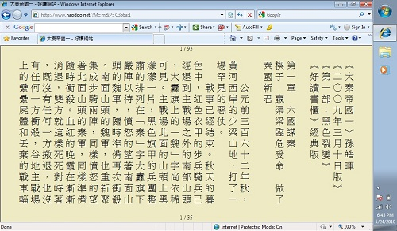
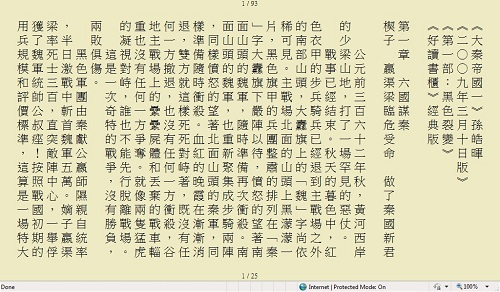
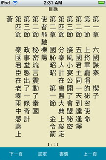
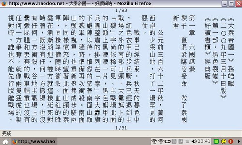
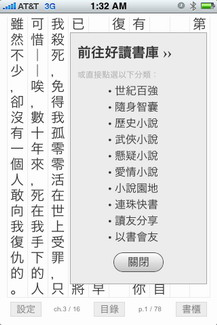
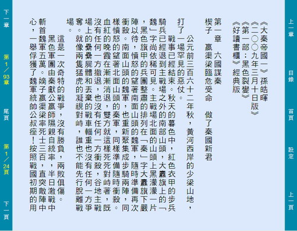

|
|
|
|
|
|
《好讀網頁版》2009/3/10 周劍輝 2017/2/6
好讀網頁版支援線上閱讀。感謝讀友呂宜祐於2009年撰寫雛形。
好讀網頁版 1.7 2017/5/29
近年來，因Apple的作業系統更新，讓好讀的線上閱讀字距變寬，閱讀頁面會超過視窗。本版已將字距固定，應可正常閱讀。iPad等機種，若原使用Heiti TC字型仍會有問題，改成黑體或其它字型應該就沒問題了。
註：每一個字是在一個td (html table cell) ，裡面放一個字。要讓td的高度不變，最簡單的方法，是在td內加一個固定高度的div，將字放在div內。
好讀網頁版 1.6 2017/2/6
中文字的unicode一般是4碼(hex)，佔二個bytes。追加的字有些是5碼，佔四個bytes。之前的版本，會將5碼中文字，如「𦬸」，顯示成兩個符號。本版修正成一個字，Windows 10可正常顯示；其他作業系統，若缺字型，會顯示成一個空格或其他符號。
原先的問題出在Javascript的string length認為5碼中文字是兩個字，這個bug就有點難改了，所以拖了很久未改。昨日寫了信想要向呂宜祐求教，問他是否知道有較正確的length function可用。寄出之前，有點猶豫，即使有也是補丁，不會太清爽，他麻煩我也不見得輕鬆，因而未寄。再想了一下，應該有更簡單的方法：
線上閱讀的網頁是我由伺服器上的updb檔中，擷取要顯示的一章，轉成UTF-8，在使用者端再排版。轉的時候，我知道哪些是5碼中文字。在這些字之前我加上一個特殊字，線上閱讀排版時，就很容易將這三個字當成一個字來處理，問題就解決了。
好讀網頁版 1.5 2010/7/8
可讀uPDB檔，站上含Big5缺字的書，將會陸續提供uPDB檔。
好讀網頁版 1.4 2010/6/1
為了更方便閱讀，書頁的大小不再固定，改為依網頁視窗大小自動設定。若要更大或更小，只需放大或縮小網頁視窗，再按F5重新排版。
iPad的螢幕較大，用來看電子書，應該相當舒適。感謝Steven Lin提供，好讀網頁版 1.4，在iPad上的使用畫面，供大家參考。
好讀網頁版 1.3 2010/5/24
支援 10240x600 可上網的小機子(Netbook)，如新款的 Eee PC，電池可耐用十小時以上，十吋的螢幕，又輕巧，當閱讀器使用，還頂不錯的。
EeePC 1001P-MU17, Winodws 7 Starter, 好讀網頁版 1.3 畫面：

Netbook的螢幕高度只有600點，打開任一瀏覽器，先按F11，再進入好讀網站，就可全螢幕閱讀，如下圖：

好讀網頁版 1.2 2009/5/4
使用介面改為全頁面觸控，並支援 iPhone/iPod touch。

若您使用過好讀單機版，好讀網頁版的觸控方式是一樣的。唯一的差別是點頁面的正中央，切換至目錄，如右圖。
若您從未使用過好讀，好讀的頁面沒有工具列，是採全頁面觸控或滑鼠點的方式操作，如下圖：
|
|
顯示或隱藏章數
(按中上角) |
目錄
(按正中) |
顯示或隱藏頁數
(按中下角) |
|
|
目錄的章節是可點選的，目錄之翻頁請使用下緣的 [下一頁] 和 [上一頁] 。另外兩個按鈕是 [設定] 和 [書櫃] 。
在iPhone/iPod touch上如何使用？手持機子，連上好讀網站，
找到您要看的書，如 孫皓暉《大秦帝國一》[下載] ...
點書名《大秦帝國一》，就會見到右下圖。
將該頁加到 Home Screen，再點選，就會見到左下圖。
iPhone / iPod touch 好讀網頁版 1.2 畫面：
好讀網頁版當然也可使用鍵盤：
| 下一頁 | 鍵盤的空白鍵或方向鍵←或↓，滑鼠的滾輪也行。 |
| 上一頁 | 方向鍵→或↑，滑鼠的滾輪也行。 |
| 首頁 | [Home] 鍵。 |
| 尾頁 | [End] 鍵。 |
| 下一章 | [PgDn] 鍵 |
| 上一章 | [PgUp] 鍵 |
EeePC 701 好讀網頁版 1.2 畫面：

好讀網頁版 1.1 2009/4/25
支援 800x480 可上網的小機子，如 Eee PC，HTC Shift 等。
好讀網頁版 1.0 特性與功能介紹 周劍輝 2009/3/10
橫式的網頁電子書，網路上處處皆是，很難得看到直式的網頁電子書。好讀網頁版，則有以下幾點特性：
- 理論上，任何作業系統，任何瀏覽器都可使用，已知 IE, Safari, Firefox, Opera 沒問題。
- 直式排版，字體可放大，字型也可改，預設值是華康中黑體。
- 一點即可閱讀，不用安裝。
- 兩種視窗閱讀：(1) 點選書名是使用好讀網頁的原視窗。
(2)點選 [閱讀] ，彈出新視窗，沒有瀏覽器上緣的工具列。
- 一次下載一章，單頁閱讀。換章時會有些微下載停頓，之後翻頁的顯示速度不會慢於好讀PC版。
開發史
(2009/2/21) 讀友呂宜祐來信：「我心中一直有個比較瘋狂的想法，希望中文電子書的內容，能變成類似「網頁WiKi」的架構，讀者看書時，每一頁的內容直接來自好讀的伺服器，如果看到錯別字，可以順便「建議」一個修正字，送回伺服器。如果兩三個人都建議同樣的修正，那電子書就可自動將舊字改為新字。因為好讀的讀者很多，但有足夠時間校對一整本書的人很少。如果每位讀者都可隨手更正一兩個字，聚沙成塔，成果也很可觀，由整個 community 一起維持好讀書庫。而且因為書頁來自伺服器的資料，一旦錯字更正，後續的人在閱讀時，看到的都是正確的版本。而將書頁內容網頁化之後，可套用到各種平台上，即使很多平台的Web browser不支援中文直排，也可以用HTML的 table ，一格一字，很容易的排成由右到左的直式，並偵測螢幕的大小，顯示恰好一個書頁的內容，搭配上 javascript 就可以模擬好讀的介面。只要將螢幕大小、字體大小參數化，同一個架構可應用於PC, Mac和各種可上網的手機。如果你對這樣的架構有興趣，我可以負責寫程式。這跟目前好讀電子書的型態差異頗大，所以我說它是個瘋狂的想法。」
(2009/2/22) 回覆呂宜祐，完全同意他的瘋狂想法。網頁直排，三年前為了黃河渡，我用了一個最快速的方法，缺點是僅適用於IE，且雖然我另外還寫了一個程式，產生直排內容，可是仍需手工剪貼，不很理想。只因每週才製作一次，我也沒特地再改。最近幾個月，我逐漸加上線上閱讀，仍用這方法，很費時費事，進度很慢，也想到要換個方法，且最好能適用於所有的瀏覽器。只是不知道呂宜祐寫程式的功力如何，建議他用javascript先寫一點小架構試測試如何顯示頁，第二步才來考慮如何直排。
(2009/2/23) 沒想到呂宜祐好厲害，不到一天他就做好了（他在佛州，我在加州，時差三小時）。也真是沒想到他對 HTML 及 Javascript 這麼精通，不但直排沒問題，他的雛型在 iPhone 上也可以跑。我看了他的程式，針對基本的問題，他的解決架構比我想像的強多了，有些說真的我還不知道可以這樣寫。有了這樣的基礎架構，往上加東西就容易了。
 (2009/2/24) 不到一天，呂宜祐又有一個比較完整的版本，可以閱讀「浣花洗劍錄」第一冊，共有前言和十五章，十六個純文字檔，程式直接讀取文字檔，把一章的內容放到網頁裡，章節與頁數顯示在網頁底下。鍵盤的控制方式，與PC版的好讀一樣，包含PageUp, PageDown、四個方向鍵，還有Home跟End。若用滑鼠點選時，四個角落的動作也和好讀一樣。
(2009/2/24) 不到一天，呂宜祐又有一個比較完整的版本，可以閱讀「浣花洗劍錄」第一冊，共有前言和十五章，十六個純文字檔，程式直接讀取文字檔，把一章的內容放到網頁裡，章節與頁數顯示在網頁底下。鍵盤的控制方式，與PC版的好讀一樣，包含PageUp, PageDown、四個方向鍵，還有Home跟End。若用滑鼠點選時，四個角落的動作也和好讀一樣。

(2009/2/25) 不到一天，呂宜祐又有一個更完整的版本，增加了設定、目錄及書櫃三個按鈕。設定是用網頁的 cookie 儲存使用者的各種選項，如字型、字體大小、螢幕尺寸、背景顏色等。目錄的顯示和書頁不同，還要能點選跳到該章節。另外，呂宜祐也完成了書櫃介面。他的概念是把「在好讀網站找書」與「線上讀書」串連成一個流程。譬如說，讀者剛看完了一本小說，想再找一本來讀，就可以點選「書櫃」，然後點選「武俠小說〕，馬上就連回到好讀網站（不一定要 Mobile 版，現有的PC版也可以，因為iPhone也可瀏覽PC版的網頁）。
(2009/2/26) 呂宜祐解決了換行字元的問題，原先要換掉，如今可保留原始文字資料的換行符號，這樣低階的中文手機也可以讀。目錄也已經可以點選，跳到該章節。
(2009/2/28) 測試了呂宜祐的最新版，大致功能都好了，該我接手了。
(2009/3/1) 看了呂宜祐的程式，伺服器端他是用ASP寫的，改用PHP重寫了一下，不要多久，好讀網頁版的第一個雛型就在好讀網站開跑了。接下來，是如何開放使用的大問題。這個雛型要在伺服器端上抓每一章的純文字檔，每本可閱讀的書，都得事先預置好所有的文字檔。好讀網站目前僅存放各書的pdb檔，若每本書都要增放純文字檔，不僅耗時費事，未來又要如何維護呢？
(2009/3/3) 想到最簡單最省事的解決方法是用PHP寫一個簡單的小程式，直接在pdb檔中抓每一個章節的純文字。這個想法是很好，可是執行起來卻不是這麼輕鬆簡單。一年多沒用PHP寫程式了，文法一寫錯就掛，只好寫一段測一段，花了大半天才將好讀原本擷取章節的C程式改成PHP。
(2009/3/5) 書檔的問題解決了，試放了一本大秦帝國只要五秒鐘。接下來的大問題是要先專注於哪個平台？微調哪些功能？原本是想試iPhone。可是本月底前另有一個火急的產品要完成，能騰出的天數有限。最好能以最少的時間解決最大的問題。想了很久很久，最後的決定是回歸到呂宜祐最初的瘋狂想法，一切以完成Wiki為最終目標。網頁版已在線上，讀友閱讀時，發現錯別字，理想的設計應該是只要點幾下，就能將錯別字回送好讀網站。方便才有人願意協助勘誤。理想的設計應該也很容易再加上字典的功能。
(2009/3/6) 有了明確的決定就比較好辦事。手機版可以等一等，首先要做的是電腦版，任何作業系統，任何瀏覽器。差別是手機版要能觸控換頁，電腦上觸控換頁則並非必要，可以改為點選字，先解決勘誤的需求。當然好用好讀仍是優先考量的條件，不好用不好讀就沒人用，也就沒人勘誤了。
(2009/3/7) 決定先做一種固定的尺寸，先簡化問題，好專注於解決操作介面。書頁不能觸控，就得將功能選項安排在螢幕上。試了各種方法，上下不好，全放在左緣也不好，最後才想到可左右分放，如下圖。圖的右緣先借放Google的廣告卡位，未來可用來顯示字典，及勘誤等介面。

(2009/3/8) 2007年底就買了一台小螢幕的Eee PC，原打算開發一個好讀版，可是過去一年本業甚忙，未能動手。這回一試剛完成的好讀網頁版，可用，只是頁面短了些，能看不能輕鬆讀。想想，容易，加個功能調整頁高就行。不幸的是，在IE上沒問題，在MacBook的Safari及Eee PC的Firefox上卻碰了個大釘子。最後，沒辦法的辦法就是將我原先產生網頁的方式，參照呂宜祐的原設計，咬著牙全部重寫。俗話說得好，吃得苦中苦，方為人上人。大功終於告成，未來網頁尺寸可隨意調整了。
(2009/3/9) Eee PC 的螢幕短小的另一個問題是瀏覽器上緣的幾排工具列又吃掉一些空間，閱讀時能拿掉最好。上網查證了一下，結論是已開啟的網頁無法自行清除上緣的工具列，唯一可行的是用 javascript另外開啟一個沒有上緣工具列的視窗。因而好讀網頁版提供兩種線上閱讀的方式：在原網頁視窗上閱讀，或另外開啟一個沒有上緣工具列的視窗。
(2009/3/10) 將一些微小的細節全清乾淨，讓1.0版正式上線。理想中還有許多功能，未來再逐一增加。網頁版的好處是可隨時修改或增加功能。希望好讀網頁版能帶給您閱讀直式中文的喜悅。也非常感謝呂宜祐對好讀網頁版的非凡貢獻。
(2009/4/25) 今天終於有點時間來解決小螢幕的問題。邊想邊改邊在Eee PC上測效果，終於完成了1.1版，支援800x480可上網的小機子。
(2009/5/4) 為了iPhone，花了幾天改寫了幾個版本，始終覺得很難用，最後的結論還是回歸好讀一貫的全頁面觸控操作方式最方便最好用。克服了技術上的一些小問題，終於完成了1.2版。
|
|
|
|
|
|
|
|
|
| 搜尋好讀 |
|
好讀第17年了。
有好讀真好，有你也真好。但不知遍及各地的你，究竟有多少。若你從未或很久沒贊助過好讀，請按這裡，贊助好讀美金或人民幣十元，讓我知道你存在。
11/25香港 Dennis C
幾年前由朋友介紹得悉好讀，多年來在旅途中它都帶給我很多樂趣。香港地方狹小，不少書都因地方問題而送人或丟棄，好讀卻帶給了我很多閲讀的方便、亦節省了儲存的位置。衷心多謝各位工作仝人！
11/19 美國紐約 June
發現好讀幾年了，但現在才發現這好讀留言板。抱歉呢，理應更早道謝。身在海外，要看一本中文書不是易事。書店售書種類少，價錢高；圖書館借書種類更少。幸好發現好讀網，可以一解書癮。衷心感謝所有有心人上載和校對。
11/17 大陸 Shirley
偶然發現好讀網這塊寶地真的很驚訝，網絡上有這樣安靜舒適的地方可以閱讀電子書，對我這種資金短缺的學生真的很意外很開心！
11/16 香港 chair chun wai
因為買了Kindle的緣故，所以才發現"好讀"這個地方。感謝"好讀"一直的更新和提供書本給大家。感謝感謝
11/15 香港 mike chan
我認識好讀是因爲kindle。那時中學買了kindle，需要找找電子書，因此在網上發現了好讀。對於繁體字kindle用家，這是個大福音！
11/13 大陸 BerthaR
今天因為Kindle的緣故找書，才發現好讀這個地方。感覺是一方淨土，公益地為書友們獲取知識省下了不少財力，節省了大家的時間：）目前我只是個高中生，提供的也只有十塊錢而已啦。十七年的好讀真是令人敬佩！希望你們知道我的感謝，還有知道更多人的感謝！
11/9 香港 MJ
從小喜愛看書，看書人也許都知道要管理保存書本是不容易的（尤其香港的地方空間更有限）。今年開始嘗試電子書，看看能否接受。因為好讀網的海量書本，小弟所喜愛的黃易＋衛斯理，還有準備開始看的金庸也不用愁了。感謝好讀！
>> 更多
|
|
|